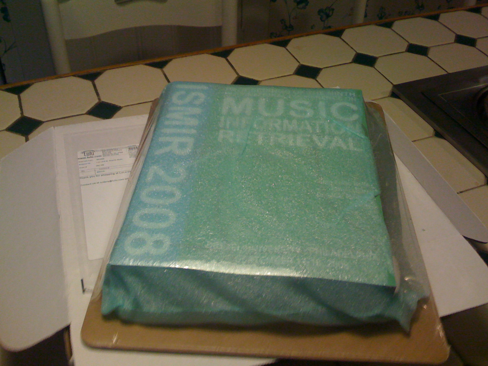
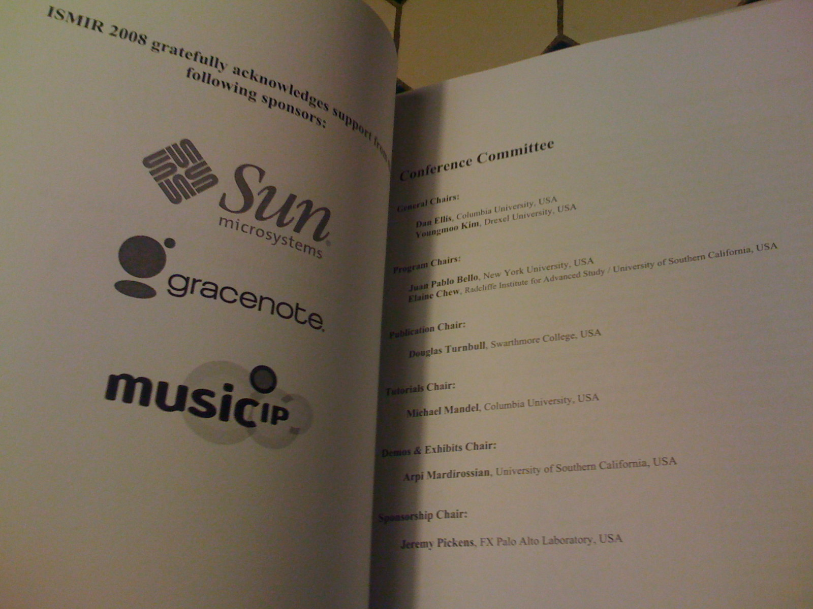

ISMIR Proceedings - the unboxing
We've all seen those iPod unboxing posts ... Now it's my turn -- because look what just arrived in the mail -- The proceedings for ISMIR 2008 - W00t!

My first view of the volume, still in bubble wrap.

Out of the box, but still wrapped in the protective covering. Never touched my human hands.

And finally, out of the cover. It is so very shiny. Shinier than my iPhone.

Here's the back side. It is definitely thicker than my iPod. Notice the crack in the Liberty Bell. Apparently all Version 1 copies of the proceedings are exhibiting the same susceptibility to cracking.

And finally a peek inside -- nice to see Sun on the sponsorship page.

The proceedings are just beautiful. The ISMIR 2008 organizers have done just an incredible job. I am glad I decided to get the hard copy.
ROFL! First ISMIR proceedings unboxing documentation ever!
Posted by Elias on September 13, 2008 at 03:33 AM EDT #